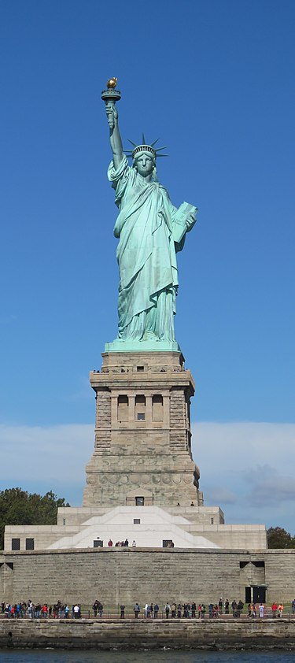

Lady Liberty
The Statue of Liberty (Liberty Enlightening the World; French: La Liberté éclairant le monde) is a colossal neoclassical sculpture on Liberty Island in New York Harbor in New York City, in the United States. The copper statue, a gift from the people of France, was designed by French sculptor Frédéric Auguste Bartholdi and its metal framework was built by Gustave Eiffel. The statue was dedicated on October 28, 1886.
The statue
The statue is a figure of Libertas, a robed Roman liberty goddess. She holds a torch above her head with her right hand, and in her left hand carries a tabula ansata inscribed JULY IV MDCCLXXVI (July 4, 1776 in Roman numerals), the date of the U.S. Declaration of Independence. A broken shackle and chain lie at her feet as she walks forward, commemorating the recent national abolition of slavery.[7] After its dedication, the statue became an icon of freedom and of the United States, seen as a symbol of welcome to immigrants arriving by sea.
Declaration of the Statue of Liberty as a Gift
A presentation tablet, also bearing Bartholdi's name, declares the statue is a gift from the people of the Republic of France that honors
the Alliance of the two Nations in achieving the Independence of the United States of America and attests their abiding friendship.
[191]